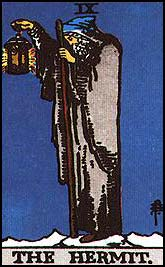

Beck's Knob at Schallenberger State Nature Preserve is haunted by a man known as "Hermit on the Knob." He was an old man who lived on the hill who read his Bible every day and did little else. Perhaps out of boredom, he decided to end it all. He dug his own grave, then shot himself in the heart while standing above the hole with a note pinned to his chest asking that he be buried there. The spot where this happened is located on a bald sandstone hill with a steep western side; it's visible from Route 22.
His ghost walks, carrying a lantern, from 22 to Beck Road toward the Hunter's Run Bridge, where it disappears.

Back
Sources
Turner, Herbert M. Fairfield County Remembered. Athens, OH: Ohio University Special Publications, 1999.